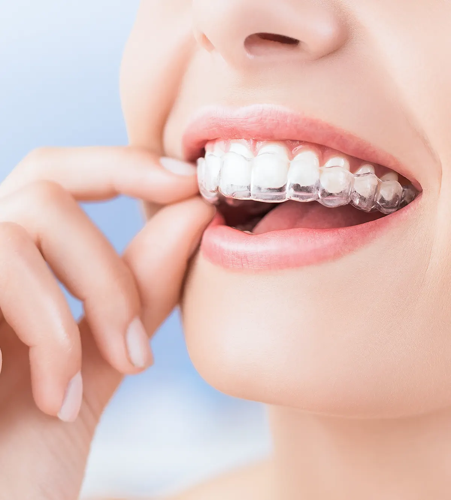
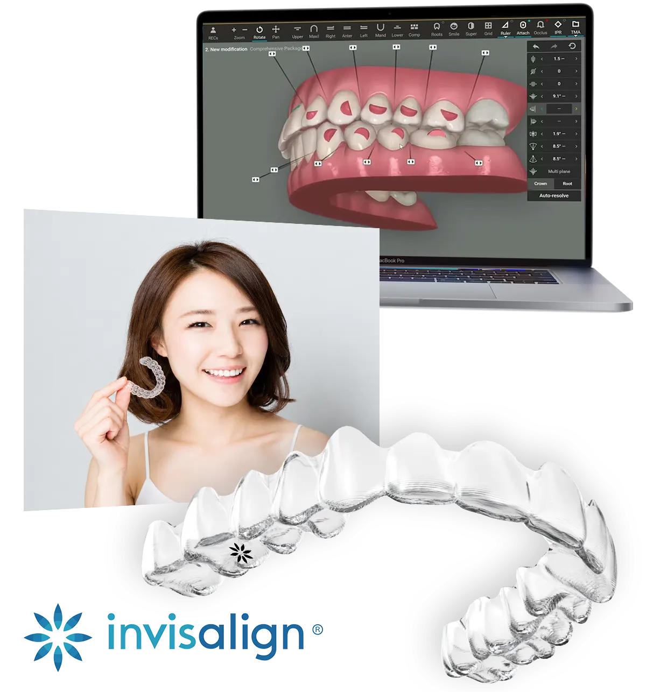
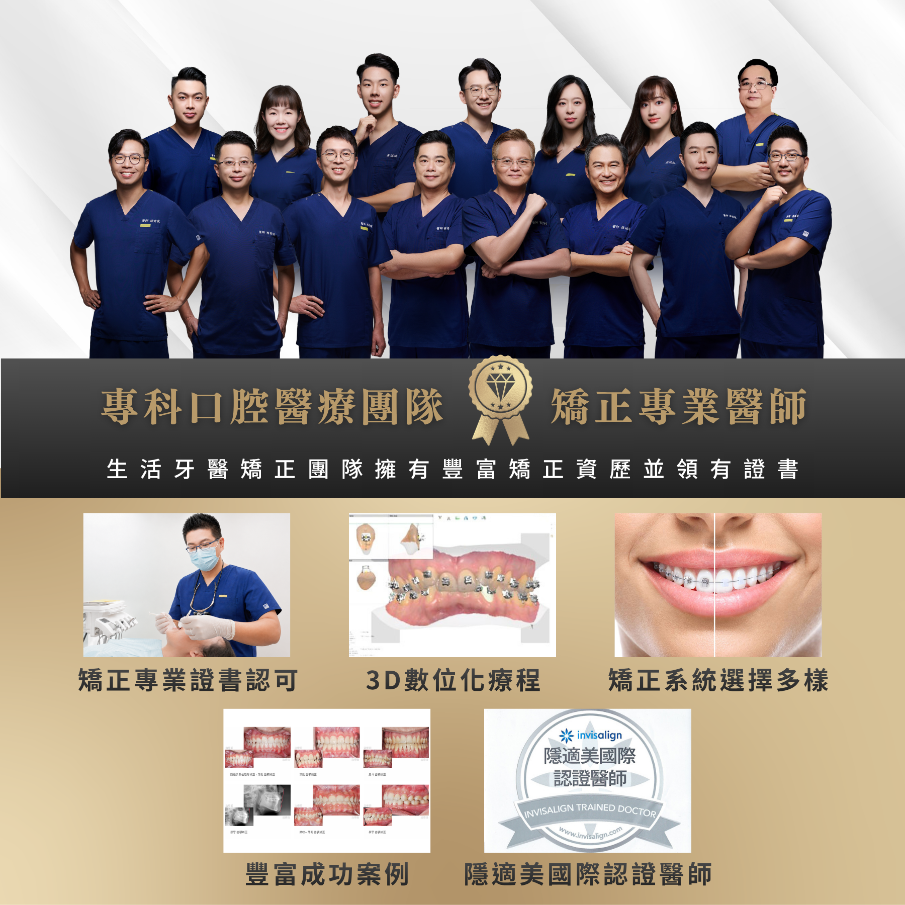
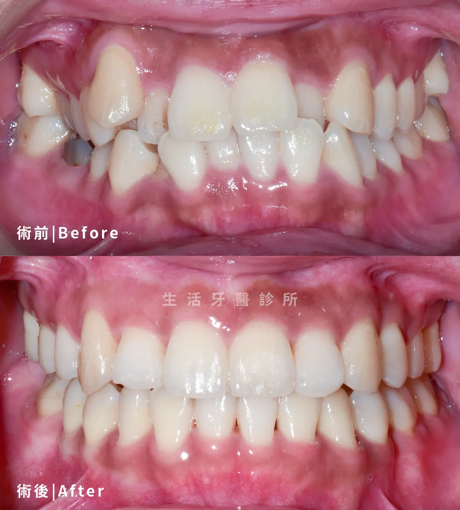
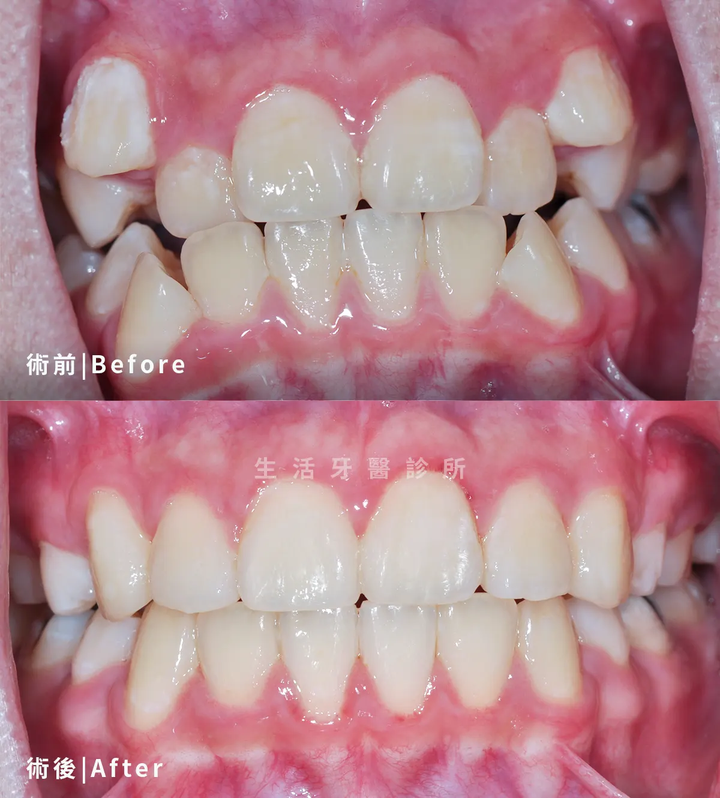
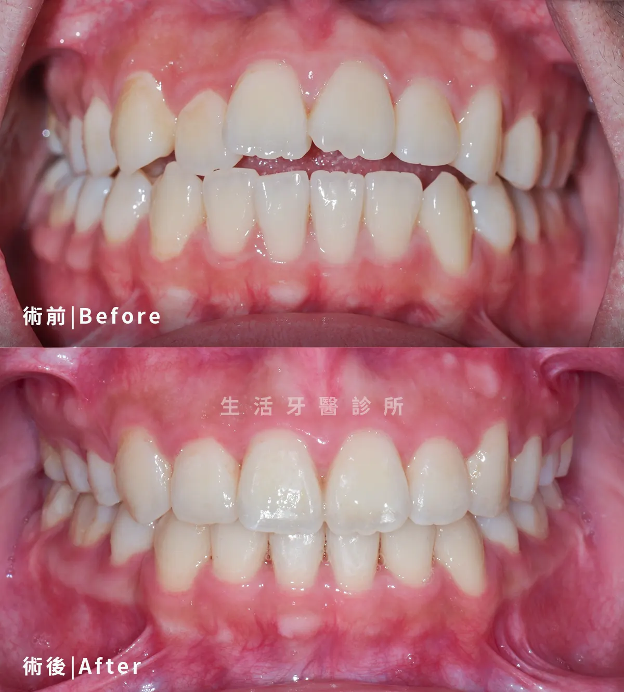

療程項目
隱適美隱形矯正Invisalign
透明牙套搭配數位規劃，兼顧日常與矯正
隱適美以一系列透明可拆式牙套逐步移動牙齒，適合重視外觀、清潔便利與生活彈性的矯正族群。

療程介紹
了解隱適美隱形矯正，選擇合適治療
隱適美以一系列透明可拆式牙套逐步移動牙齒，適合重視外觀、清潔便利與生活彈性的矯正族群。
生活牙醫會依照每位患者的口腔條件、期待、預算與長期維護需求，安排完整檢查與醫師說明。療程開始前會先釐清適合對象、可能限制與替代方案，讓治療計畫更透明。
實際治療方式與時間會因牙齒狀況、牙周健康、咬合、生活習慣與全身病史而異，建議以現場醫師診斷為準。

外觀低調
透明牙套較不影響日常社交與工作場合
可自行取下
進食與刷牙時可取下，維持清潔習慣較便利
數位治療模擬
透過掃描與軟體規劃牙齒移動階段
配戴時間管理
每天需足時配戴，治療成果高度仰賴配合度
生活牙醫的優勢
認證醫師規劃隱形矯正
生活牙醫結合矯正專業醫師、3D 數位療程與隱適美國際認證，協助評估透明牙套治療可行性。

矯正專業醫師
由醫師評估牙齒排列、咬合與配戴條件，判斷隱適美治療方向。
隱適美國際認證醫師
具 Invisalign 認證醫師資源，依齒列條件規劃透明牙套移動階段。
3D 數位化療程
透過口掃與數位模擬溝通牙齒移動路徑，讓療程規劃更清楚。
矯正系統選擇多樣
若隱形矯正不適合，也可討論自鎖式或傳統矯正等替代方案。
矯正證書認可
醫師具相關訓練與證書，協助判斷複雜咬合是否需要合併其他治療。
豐富成功案例
累積隱形矯正與齒列改善案例，可參考相近條件的治療變化。
療程流程
從評估到穩定追蹤
每個療程都會先確認口腔基礎條件，再依診斷結果安排合適步驟與回診節奏。
口腔與咬合評估
確認隱適美隱形矯正需求與口腔狀況，先建立治療方向。

收集資料並規劃療程
收集影像、數位掃描與口腔紀錄，由醫師規劃合適的矯正療程。

隱適美牙套設計與製作
依數位資料設計矯正計畫並製作隱適美牙套。
定期回診與調整
按時回診，由醫師觀察矯正進度並視需要調整。

矯正完成與維持
矯正完成後給予維持器，並安排定期回診追蹤。
治療比較
治療方式怎麼選
| 比較項目 | 自鎖式矯正 | 隱適美隱形矯正 | 傳統矯正 |
|---|---|---|---|
| 外觀感受 | 固定裝置，外觀較俐落 | 透明牙套，配戴較低調 | 金屬裝置，視覺較明顯 |
| 適合對象 | 想兼顧效率與穩定者 | 重視外觀與清潔便利者 | 齒列或咬合較複雜者 |
| 飲食與清潔 | 固定裝置，需仔細清潔 | 可取下，吃飯刷牙方便 | 固定裝置，清潔死角較多 |
| 回診與配合度 | 定期調整，需配合清潔 | 需每天足時配戴牙套 | 定期調整，配戴要求較低 |
實際案例分享
隱形矯正的排列改善
嚴選真實案例，由專業醫師團隊親自操刀，沒有千篇一律的療程，只有最適合你的量身規劃

隱適美 × 前牙排列
改善前牙擁擠，讓清潔更順手
透過透明牙套逐步排列前牙，改善視覺擁擠與清潔死角，讓日常刷牙與牙線使用更便利。

隱形矯正 × 牙縫關閉
關閉牙縫，提升微笑完整度
針對前牙縫隙進行數位模擬與牙套階段設計，逐步調整牙齒位置與微笑比例。

隱適美 × 咬合調整
兼顧外觀與咬合穩定
不只排列牙齒，也同步評估上下齒列咬合關係，讓治療成果更穩定、維持更長久。
常見問題
隱適美隱形矯正療程FAQ
整理諮詢時常見的問題，協助您在看診前先掌握基本方向。
通常需要每天配戴約 20 至 22 小時，只有吃飯、刷牙與清潔牙套時取下。
更換新牙套時可能有緊繃或痠軟感，通常會逐漸適應；若有明顯刮傷或疼痛需回診調整。
不一定。嚴重骨性咬合、複雜旋轉或需大幅移動的案例，可能需要固定矯正或合併其他治療。
牙醫知識
關於隱適美隱形矯正，你該知道的事
整理諮詢時常見的問題，協助您在看診前先掌握基本方向。

立即諮詢隱適美隱形矯正
歡迎預約諮詢，由醫師一對一親診為您規劃療程，讓我們一起打造最符合需求的治療方案